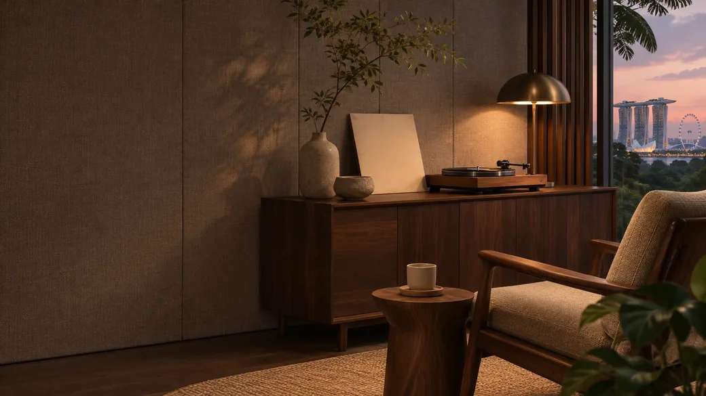
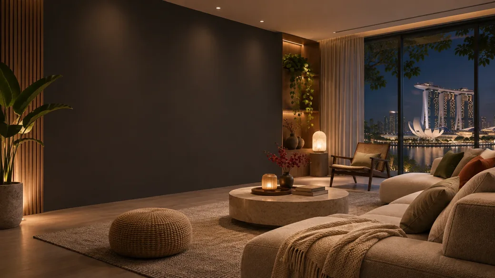
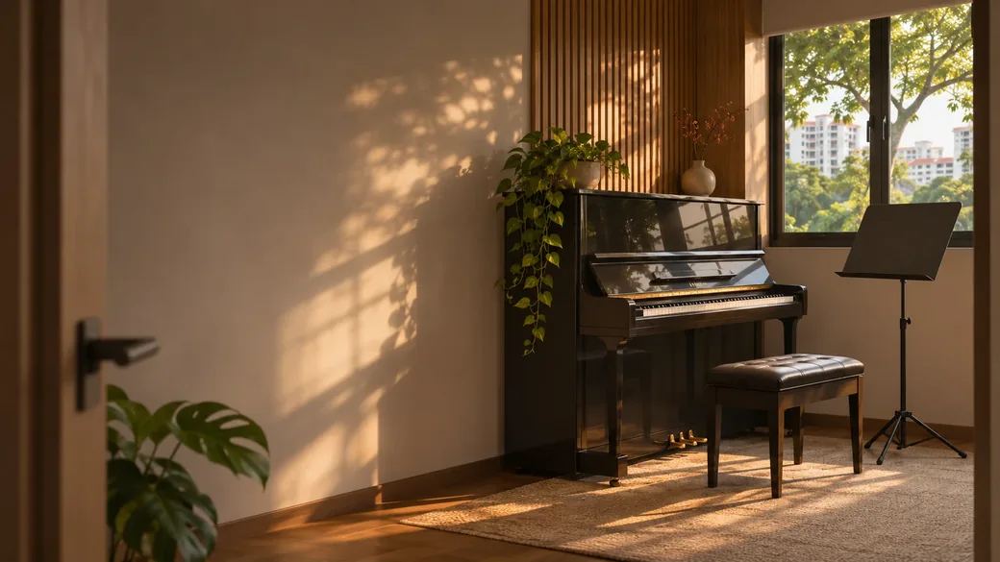
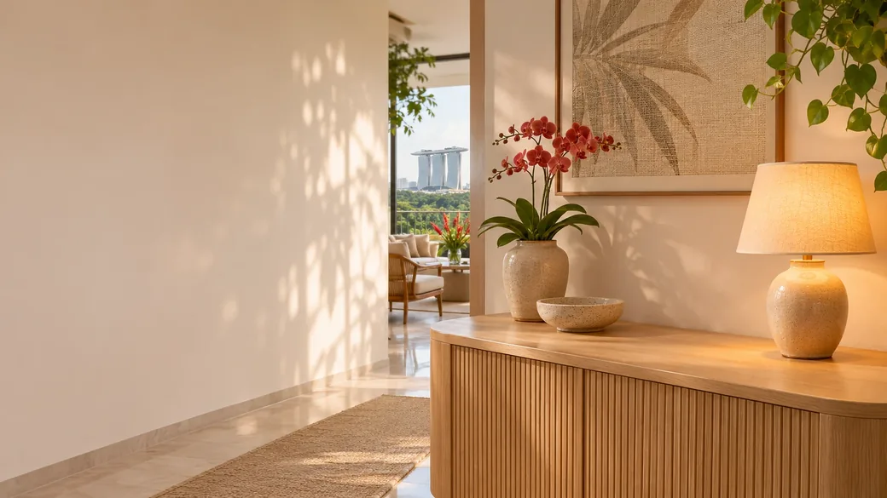

Channel 01 / Sony
The listening room.
Pick an album you know by heart. Settle in and listen for something you missed the first time.
Sony at GJHElectronics by Goh Joo Hin
A favourite record, a late film, a familiar voice. Explore four ways electronics find a place in our homes.
Tune inThe channel guide
Pick a scene to explore the brand behind it.

Channel 01 / Sony
Pick an album you know by heart. Settle in and listen for something you missed the first time.
Sony at GJH
Channel 02 / LG
Draw the curtains, claim your corner of the sofa and give the opening scene your full attention.
Explore LG OLED TVs
Channel 03 / Casio
A slow scale, a tricky passage, then the first clean run. Keep a little time for music.
Casio at GJH
Channel 04 / Gigaset
Leave the dishes for a minute. Sometimes the best sound in the room is someone asking how your day went.
Explore Gigaset phones